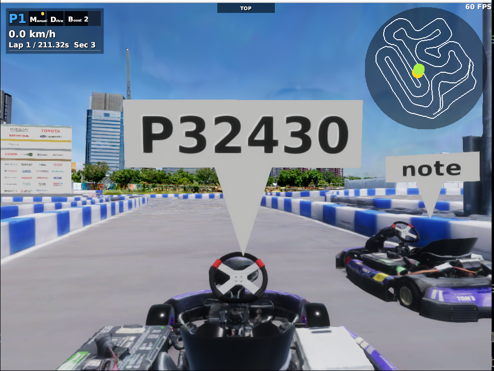
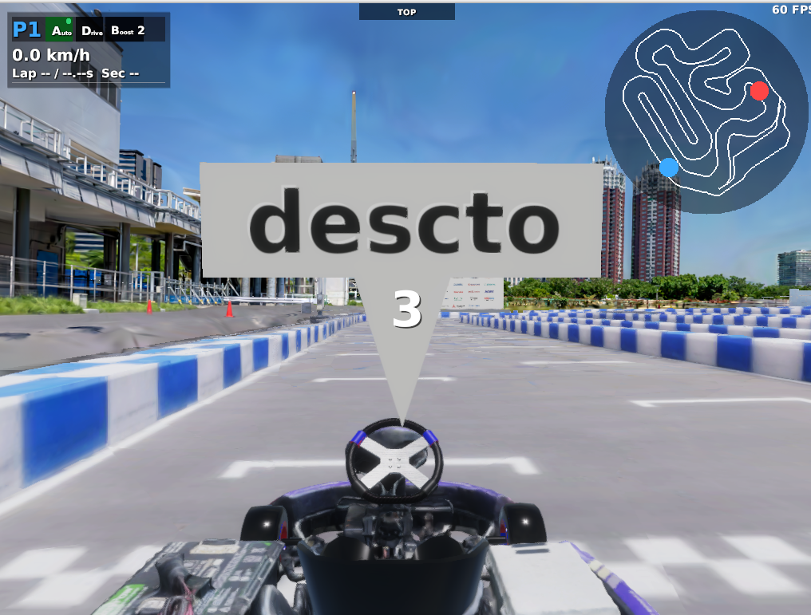

Multiplay（通信対戦）
AWSIM の Multiplay 機能を使うと、複数の PC を同じネットワークに接続して通信対戦ができます。各クライアントが自車（GoKart）の姿勢を UDP で共有し、互いの画面に相手の車両が表示されます。
インターネット経由のサーバーは不要です。スマホのテザリング Wi-Fi に全員の PC を接続するだけで、その場で対戦できます（もちろん同一の家庭・会場 Wi-Fi でも構いません）。 セキュリティの観点から、テザリングのネットワーク名（SSID）とパスワードはその場限りの使い捨てのものを設定し、終わったら変更しておくことをおすすめします。
必要なもの
- AWSIM が動く PC × 2台以上（例: ノート PC とデスクトップ PC）
- 全員が接続できる同じ Wi-Fi（スマホのテザリングで OK。通信はネットワーク内で完結するのでモバイルデータはほぼ消費しません）
役割
| 役割 | 説明 | 起動コマンド |
|---|---|---|
| host | サーバー役 + 自分もプレイ（1人がこれになる） | make simulator-multiplay-host |
| client | host に接続してプレイ（他の全員） | make simulator-multiplay-client |
これらのコマンドはそれぞれ aichallenge/simulator_scripts/multiplay-host.sh / multiplay-client.sh を実行します。接続先 IP などの起動引数を変更したいときは、このスクリプトを直接編集してください。--camera / --lidar などのセンサー引数は好みに合わせて自由に設定して構いません。
手順
1. 全員が同じ Wi-Fi に接続する
スマホでテザリングを ON にして、全員の PC をその Wi-Fi に接続します。
2. host の IP アドレスを確認する
host 役の PC で IP アドレスを確認します。
ip addr show | grep "inet "
テザリングなら iPhone は 172.20.10.x、Android は 192.168.x.x になることが多いです。この値を client 役の全員に伝えます。
3. host を起動する
host 役の PC ではスクリプトを変更せずそのまま起動します。
make simulator-multiplay-host
Note
host 側の --multiplay-address 127.0.0.1 はそのままで正しい設定です。host に内蔵されたクライアントが自分自身のサーバーに接続するためのアドレスで、サーバー自体は全てのネットワークインターフェースで待ち受けます。
4. client の接続先を host の IP に変更して起動する
client 役の PC で aichallenge/simulator_scripts/multiplay-client.sh の --multiplay-address を host の IP アドレスに書き換えます。
--multiplay-address 192.168.x.x \ # ← host の IP に変更
書き換えたら起動します。
make simulator-multiplay-client
接続に成功すると、互いの画面に相手の車両が表示されます。

最重要: --multiplay-address に入れるのはサーバー（host）の IP
--multiplay-address は「接続先のサーバー（host）の IP アドレス」です。自分の PC の IP アドレスではありません。ここを自分の IP にしてしまうのが一番よくある間違いです。
プレイヤー名の設定（任意）
--multiplay-name を付けると、車両の頭上ラベルに好きな名前（最大6文字）を表示できます。未設定の場合は P32430 のような自動生成 ID が表示されます（上のスクリーンショットの手前の車両）。
host / client それぞれのスクリプトに以下を追加します。--start-mode count も入れておくと、全員の車両が接地した時点で自動的にカウントダウンが始まります。
--multiplay-name descto \ # ← 好きな名前（最大6文字）
--start-mode count \
全員の車両が接地するとカウントダウンが始まり、レース開始です。

server + client 構成（専用サーバー）
ここまでの手順は host 構成（1人がサーバー役とプレイヤーを兼任）ですが、誰も運転しない専用サーバーを立てて、全員が client として対等に参加する構成も可能です。
server は Docker を通さず直接起動する
make コマンド（Docker）経由ではシミュレータを同じ PC で1つしか起動できません。server と client を同じ PC で動かす場合は、server 側を Docker を通さずに AWSIM バイナリの直接実行で起動してください。
server 役の PC でバイナリを直接実行します。
./aichallenge/simulator/AWSIM/AWSIM.x86_64 --multiplay server --multiplay-port 7777
引数なしで起動して、起動時の設定 UI で Multiplay を server にして開始しても構いません。
あとは全員が client として接続します。
- server と同じ PC の人:
make simulator-multiplay-client（接続先はデフォルトの127.0.0.1のままで OK） - 別の PC の人:
multiplay-client.shの--multiplay-addressを server の IP に変更してmake simulator-multiplay-client
Autoware 接続・rosbag 記録（任意）
make autoware-simulator で Autoware を接続して自動走行させることも、make autoware-attach で Docker コンテナに入って rosbag を記録することもできます。もちろん LiDAR やカメラのデータも記録できます。
うまくいかないとき
接続できない場合は、上から順に確認してください。
1. まず ping で疎通確認
client の PC から host の IP に ping を打ちます。
ping <hostのIP>
ping が通らない場合は Wi-Fi のクライアント間通信が遮断されています（AP アイソレーション）。会社・学校の Wi-Fi や一部の Android テザリングで起こります。別のスマホでテザリングし直すのが手っ取り早い解決策です（iPhone のテザリングは基本的に通ります）。
2. host のファイアウォールで UDP 7777 を許可
host 側で UDP ポート 7777 への受信が遮断されていないか確認します。
sudo ufw allow 7777/udp # ufw を使っている場合
3. 画面上部のバナーを見る
MULTIPLAY START FAILED: <理由>— 起動時の接続に失敗。表示された理由を確認してください（以後はオフラインで継続動作します）MULTIPLAY CONNECTION LOST— 一度つながった後に host からの受信が途絶（host の終了、Wi-Fi 切断など）
4. その他の典型パターン
| 症状 | 原因と対処 |
|---|---|
| 2台目が join できない | --multiplay-network-id の重複。デフォルトの 0（自動採番）のままにする |
| 同じ PC で2つ起動するとエラー | UDP ポート衝突。片方の --multiplay-port をずらす（例: 7778） |
| 相手から自分の車が見えない | --vehicles が --multiplay-vehicle-index 以上になっているか確認 |